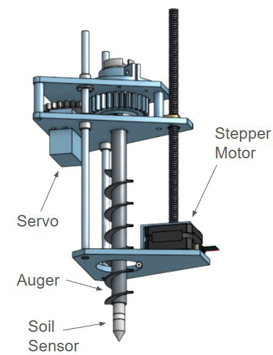
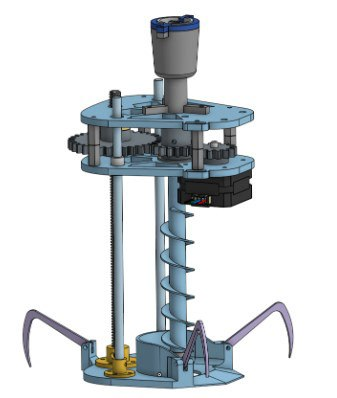
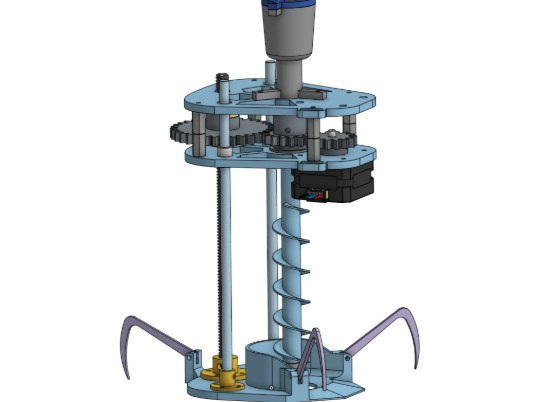
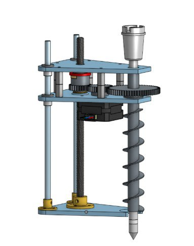
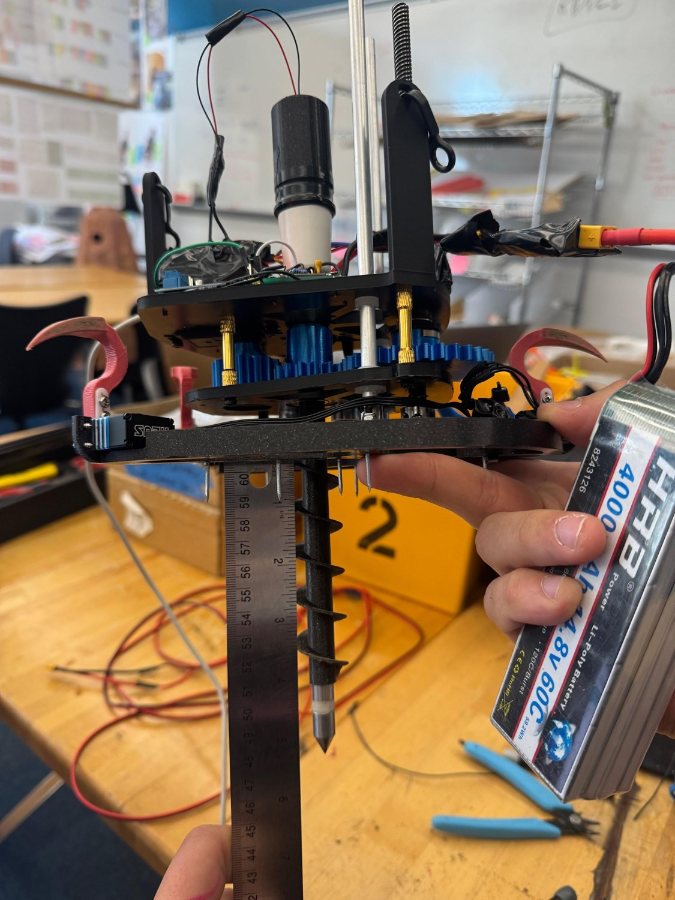
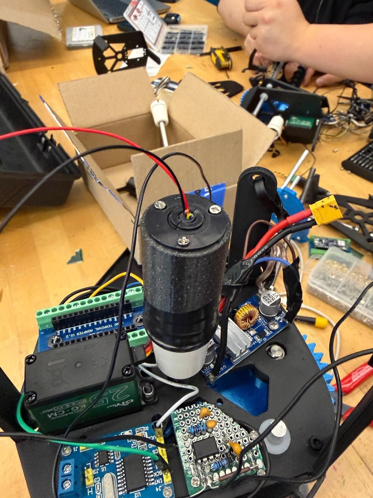
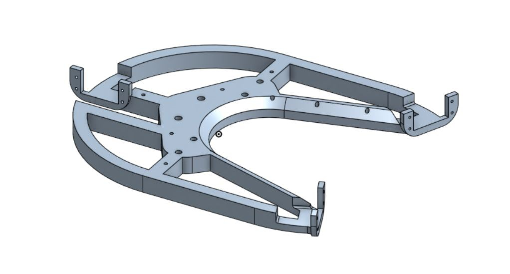
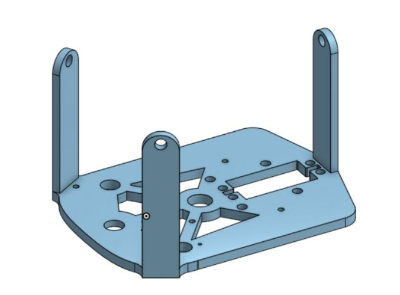

The challenge
Farmers need timely soil-moisture data to make irrigation decisions, but existing sampling methods can be slow, expensive, or limited in spatial resolution. A drone-mounted system could increase coverage and sampling frequency if its probe could insert and retract reliably, survive repeated soil impacts, and remain within the drone’s payload capacity.
We explored a lightweight, repeatable, and scalable sampler through design sprints, concept evaluations, and physical prototypes, with soil variability and insertion reliability shaping the design.
Original sampling requirements
The requirements below guided the early concepts. They were design targets, rather than measurements demonstrated by the prototypes:
- Sample to a depth of 6 inches, with a longer-term goal of scaling to 18 inches.
- Keep the sampling failure rate below 5%.
- Operate within the drone’s payload capacity.
- Avoid damaging crops during insertion.
- Maintain moisture-measurement error within ±5% when the probe is properly inserted.
- Work across different soil conditions.
My contribution
I led mechanical concept development and CAD design, iterated the lead-screw, auger, and probe assemblies, and built and tested physical prototypes. I also evaluated trade-offs among motor choice, mass, stability, and insertion force, and contributed to sprint planning and design reviews.
From concepts to prototypes


We compared three approaches to inserting the probe:
- Embedded drill probe: a lead screw drives a rotating auger into the soil, allowing controlled insertion and stepwise measurement. Its expected insertion reliability came with a higher mass in the concept evaluation.
- Harpoon mechanisms: spring-loaded designs using snail or helical cams store energy and release it for rapid soil penetration. Force control and repeatability were the main challenges.
- Sliding hammer: a gravity-assisted hammer impacts the probe into the soil. It offered a simple mechanism with minimal actuation, while alignment and repeatability were the primary concerns.
Mark 1: a stepper motor drove the lead screw and a servo drove the auger, allowing downward speed to be varied independently from auger rotation. At approximately 610 g, the prototype exposed stability and mass-distribution issues.
Mark 2: the motor and auger layout was rearranged for stability, the auger was centered for better alignment, and mass was reduced where possible. Anchors and a stronger probe holder were added.


Early testing & next steps
Both versions were physically built and tested on the bench and in soil buckets. Video-documented insertion and retraction cycles were used to examine motor torque, structural stability, and alignment. The trials exposed slippage, soil compaction, and anchoring challenges, providing feedback on insertion behavior and failure modes in real soil.
The original development plan was to finalize the 6-inch probe for consistent data collection, explore alternative anchoring mechanisms, scale toward 18-inch sampling, and conduct field tests with farmers. The Sprint 3 review below provides the later integration status.
April 10, 2026 · Team design review
Sprint 3: integrating the sampler
By Sprint 3, the team’s sampler weighed 694 g and had a reported travel of a little over 5 inches. This was mechanism travel, rather than a verified soil-sampling depth. The review brought mechanical revisions together with probe wiring, distance sensing, and drone attachment.
- Anchors and base: shorter, rounder anchors and a more open base layout.
- Probe and electronics: an assembled probe holder, a fully wired probe, and repackaged wiring with a slip ring.
- Suspension: attachment holes moved above the top plate to revise the drone-to-sampler connection.
- Distance measurement: an ultrasonic sensor was mounted, wired, and reported functional.








What testing still needed to resolve
The review identified soil-dependent anchor performance, wire tangling, and fragile base-mounted servo supports. Further testing and stronger mounts were planned. These findings kept the focus on repeatability and durability, beyond getting one successful cycle.
At the wider system level, a single sampling routine could return data over CAN, but a second run could hang and distance-sensor-based control still needed testing. Separate drone flight tests demonstrated a slung load; the full-mission test shown in the review had not yet combined that load with CAN-controlled sampling. End-to-end integration remained work in progress at this review.